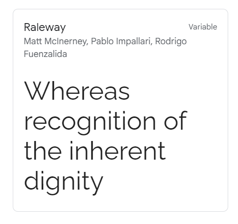

Hermosillo Chamber of Commerce is an association of small business and cooperatives who sell handicrafts
and typical products of the region. Some of the objectives of this association is to help them to open new
markets for their products and give legal advice to their small business.
The Chamber website will be the link between the association and its members, to work in their benefit
and helping them to achieve their business goals.
Our target audience are small or family business who produce and sell handicrafts and typical products of the region. The owners or administrators of these businesses have an age average of 35 - 45 years, most of the time the business has passed from generation to generation within his family, but with a more global vision they seek to expand it and find new markets for their products.
Some scenarios or question that will drive the content of the website are:
1. Is there any artisans event where I can take my products and sell them?
2. Where can I look for legal advice to grow my business?
3. What requirements do I need to export my products?
4. If I am looking for employees, can you help me to publish my job offers?
5. Can you help me with accounting and tax advice?
6. How can I be part of the association and what benefits do I get?
| Primary | Secondary | Accent 1 | Accent 2 |
|---|---|---|---|
| #EFEFEF | #D13133 | #767575 | #CAEBF2 |
The website typefaces will be sans-serif to increase the readability, in specific Raleway.
